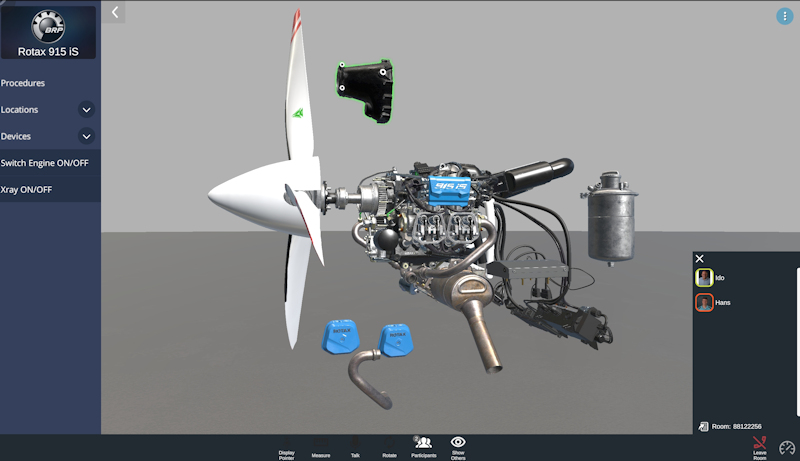
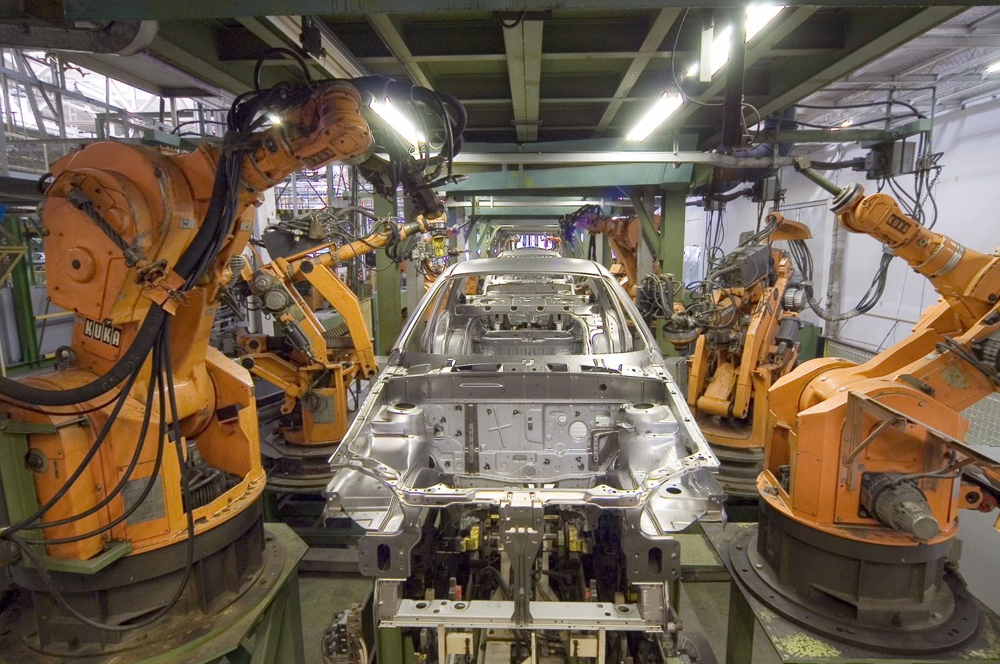

Executive Summary
NVIDIA Omniverse는 흔히 "물리적으로 정확한 3D 세계를 만드는 시뮬레이션 플랫폼"으로 소개된다. 이 보고서는 한 계층 아래를 본다. Omniverse를 떠받치는 진짜 자산은 렌더링 엔진이 아니라 Pixar가 25년간 다듬은 데이터 표준 OpenUSD(Universal Scene Description)다. 관계형 데이터베이스가 SQL을 표준 삼아 산업 인프라가 된 것처럼, 흩어져 있던 3D·물리·로보틱스 데이터는 OpenUSD라는 공통 문법 위에서 처음으로 상호운용 가능한 자산이 된다.
2025년 12월 17일 Linux Foundation 산하 AOUSD가 Core Specification 1.0을 발표하면서, USD는 "사실상의 표준"에서 국제 인정 표준으로 올라섰다. 표준이 깔리면 데이터가 흐른다. Omniverse는 USD 위에서 월드를 짓고, 시뮬레이션으로 합성데이터를 만들고, 그 데이터로 로봇을 학습시킨 뒤 다시 검증하는 순환을 돌린다. 그러나 표준은 데이터의 '형식'을 통일할 뿐 '품질'까지 보증하지는 못한다. 이것이 보고서의 무게중심이다.
USD가 씬을 기술하는 문법을 통일해도, 그 씬의 물리적 정확성·분포 대표성·라벨 정합성은 자동으로 따라오지 않는다. 합성데이터의 '양'이 학습의 '충분성'을 보장하지 않기 때문이다. OpenUSD가 표준을 형식까지 끌어올렸다면, 그 위에서 충분성을 측정하고 보증하는 데이터 품질·계보·거버넌스 계층은 아직 비어 있다. 페블러스가 서는 자리가 바로 그 빈칸이다.
99%+
합성데이터의 실데이터 절감폭
RCAN, 동급 성능 유지 (CVPR 2019)
32.1%
최신 휴머노이드 모델의 한계
GR00T N1, 78만 궤적으로도 주방 태스크
$1.69B→$6.66B
OpenUSD 상호운용 플랫폼 시장
2025→2033, CAGR 18.7% (추정치)
30사+
AOUSD 개방 표준 참여 기업
Pixar·Apple·Adobe·Autodesk·NVIDIA 등
표준이 산업을 만든다: SQL이 한 일을 OpenUSD가 한다
1970년대까지 기업의 데이터는 애플리케이션마다 제각각의 형식으로 갇혀 있었다. SQL과 관계형 모델이 등장하고 나서야 데이터는 특정 프로그램의 부속품이 아니라, 여러 도구가 함께 질의하고 결합할 수 있는 독립 자산이 되었다. 표준이 먼저 깔렸고, 그 위에서 데이터베이스 산업 전체가 자라났다. 지금 3D·물리·로보틱스 데이터가 정확히 같은 길목에 서 있다.
로봇과 시뮬레이션의 세계에는 형식이 너무 많았다. 로봇 본체는 URDF나 SDF로, 물리 모델은 MJCF로, 제품 설계는 STEP으로, 게임 에셋은 FBX나 glTF로 기술된다. 같은 공장을 표현하더라도 도구가 바뀌면 매번 내보내고 다시 불러오는 변환의 늪에 빠진다. OpenUSD는 이 난립을 하나의 공통 문법으로 묶는다. Pixar가 애니메이션 제작을 위해 발전시킨 이 표준은 이제 산업·로보틱스·자율주행의 공용어로 확장되고 있다.

1.1교환 포맷이 아니라 컴포지션 시스템
흔한 오해는 USD를 "또 하나의 3D 파일 포맷"으로 보는 것이다. FBX나 glTF가 한 장면을 통째로 주고받는 교환 포맷이라면, USD는 여러 레이어를 비파괴적으로 합성하는 컴포지션 시스템이다. 레이어(layer), 참조(reference), 컴포지션 아크(composition arc) 같은 장치 덕분에, 조명 담당자와 모델링 담당자와 물리 담당자가 같은 씬을 동시에, 서로의 작업을 덮어쓰지 않으면서 편집할 수 있다. 단순 CSV 교환과 트랜잭션을 갖춘 데이터베이스의 차이에 가깝다.
주요 3D 데이터 형식을 "무엇을 위해 설계되었는가"의 관점에서 비교하면 한 가지가 또렷하다. USD만 협업과 합성을 1차 목표로 삼는다.
| 형식 | 주 용도 | 성격 | 비파괴 협업 |
|---|---|---|---|
| OpenUSD | 씬 기술·조립·협업 | 컴포지션 시스템 | 레이어·참조·변형으로 지원 |
| FBX | DCC 도구 간 에셋 교환 | 교환 포맷(독점) | 제한적 |
| glTF | 런타임·웹 전송 | 교환 포맷(개방) | 없음 |
| STEP | CAD·제조 설계 | 교환 포맷(ISO) | 없음 |
| URDF / SDF / MJCF | 로봇·물리 시뮬레이션 기술 | 도메인 전용 기술 언어 | 없음 |
1.22025년 12월, 사실상의 표준에서 인정된 표준으로
2025년 12월 17일은 분수령이다. Linux Foundation 산하 AOUSD(Alliance for OpenUSD)가 Core Specification 1.0을 발표하면서, USD는 벤더가 합의해 따르던 "사실상의 표준"에서 PDF나 HTML처럼 문서화된 국제 표준의 지위로 올라섰다. Core Spec 워킹그룹 의장 Aaron Luk(NVIDIA)은 USD를 "가상 세계가 규모 있게 만들어지는 방식을 기술하는 결정적 문법"이라 표현했다. 사양이 글로 박히면 구현이 갈라지지 않고, 구현이 모이면 데이터가 자산이 된다.
핵심 시사점: OpenUSD는 파일 포맷이 아니라 데이터 표준 계층이다. SQL이 데이터베이스 산업을 떠받쳤듯, USD는 3D·물리·로보틱스 데이터가 도구를 가로질러 흐르게 하는 공통 토대가 된다. 다만 비유는 여기까지 깔끔하게 성립한다. 다음 절부터 비유가 어디서 깨지는지를 함께 본다.
Omniverse 해부: 앱이 아니라 데이터 OS
Omniverse를 하나의 설치형 앱으로 생각하면 길을 잃는다. 그것은 단일 프로그램이 아니라, USD를 공통 데이터 계층으로 삼는 도구 모음이다. 더 정확히는 USD 위에서 데이터의 생성·변형·소비를 조율하는 운영체제에 가깝다. 각 도구는 같은 USD 자산을 읽고 쓰며, 그 흐름이 하나의 순환을 만든다.
2.1USD 위를 도는 데이터 순환
순환은 네 단계로 돈다. 아래 흐름은 "단일 앱이 아닌 도구 모음"이라는 설명을 데이터의 이동 경로로 다시 그린 것이다.
① 월드 빌딩
USD Composer로 공장·도시·실내를 조립하고 조명·렌더링을 입힌다. 출력은 USD 자산.
② 시뮬레이션·합성
Isaac Sim·Isaac Lab이 GPU 병렬 물리로 수천 환경을 돌려 합성데이터를 생성한다.
③ 학습
생성된 궤적·영상으로 로봇 정책과 자율 시스템을 강화학습·모방학습한다.
④ 검증·환류
학습된 정책을 다시 시뮬레이션에서 검증하고, 결과를 USD 자산에 되먹인다.
이 순환에서 가장 무거운 단계가 ②다. Isaac Lab은 환경 구성의 기본 단위로 USD 프로토타입을 쓰며, PhysX 물리 엔진과 포토리얼리스틱 렌더링을 통합해 8 GPU에서 수천 개의 병렬 환경을 동시에 굴린다. 로봇이 현실에서 한 번 시도할 시간에 시뮬레이션은 수천 번을 시도한다. 합성데이터가 학습의 보조가 아니라 주축이 되는 이유다.

2.2학계가 따라잡은 USD: 사람·LLM·시뮬레이터가 함께 읽는 씬
학계도 USD를 단순 저장 포맷이 아니라 모델이 읽고 예측하는 대상으로 격상시키고 있다. Real2USD 연구는 USD를 "LLM이 읽을 수 있는 XML 기반 씬 그래프"로 다루고, 3D 씬 그래프와 온톨로지를 결합한 연구는 MJCF·URDF·SDF의 파편화를 USD로 표준화한다. Articulate3D는 아예 USD를 머신러닝의 예측 타깃으로 사용한다. SQL이 사람과 기계가 함께 질의하는 표준이듯, USD는 사람·LLM·시뮬레이터가 함께 읽는 3D 표준이 되어 간다.
생성 계층도 붙는다. Cosmos 같은 월드 파운데이션 모델은 합성데이터를 생성·보강하고, 에이전트형 씬 생성 연구는 AI가 스스로 장면을 짓고 반복적으로 비평하며 다듬는 루프를 제안한다. 다만 한 가지는 짚어 둘 필요가 있다. "OpenUSD가 곧 데이터 표준"이라는 명제를 정면으로 이론화한 논문은 아직 없다. 학계는 USD를 도구로 쓰고 있지만, 표준 그 자체의 의미를 데이터 품질의 언어로 묻는 작업은 비어 있다. 이 보고서가 서려는 자리이기도 하다.
누가 표준을 쥐는가: AOUSD와 개방성의 역설
표준이 자산이 되려면 한 회사의 것이어선 안 된다. AOUSD는 그 조건을 형식적으로 충족한다. Pixar·Apple·Adobe·Autodesk·NVIDIA가 창립한 이 연합은 Linux Foundation 산하의 개방 거버넌스 아래 운영되며, 지금은 Siemens·Intel·Amazon·Renault 등을 포함해 30개사 이상이 참여한다. 누구나 사양을 읽고 구현할 수 있고, 특정 벤더가 일방적으로 방향을 틀 수 없다.
그러나 거버넌스가 열려 있다는 것과 중력이 고르게 분포한다는 것은 다른 문제다. USD를 가장 깊이 제품화하고 가장 넓게 전파하는 주체는 단연 NVIDIA다. Isaac·Cosmos·Omniverse가 모두 USD를 핵심에 두기 때문에, 실무에서 "USD를 쓴다"는 말은 적잖은 경우 "NVIDIA 스택 위에서 쓴다"는 뜻으로 기운다. 개방 표준이면서 동시에 사실상 한 벤더의 중력장 안에 있는 상태, 이것이 개방성의 역설이다.
3.1표준 안의 빈틈과 표준 밖의 경쟁
단편화 리스크는 표준의 안과 밖에 동시에 존재한다. 표준 안쪽을 보면, Core Spec 1.0은 상호운용성의 토대를 깔았지만 애니메이션이나 스케일링 같은 영역은 후속 버전으로 미뤄 두었다. 아직 글로 박히지 않은 부분은 구현마다 갈라질 여지가 남는다. 표준 바깥에는 glTF/Khronos, STEP, 그리고 디지털 트윈 기술 모델을 겨냥한 DTDL 같은 대안 데이터 모델이 병존한다. USD가 모든 영역을 흡수할지, 영역별로 표준이 갈릴지는 아직 열린 질문이다.
실무자 입장에서 이 역설은 추상적 논쟁이 아니다. "표준을 채택하면 벤더 락인에서 벗어나 데이터를 자산화할 수 있다"는 약속과, "가장 잘 작동하는 경로는 결국 한 벤더의 스택"이라는 현실 사이에서 균형을 잡아야 한다. 여기서 중요한 분업의 실마리가 보인다. 표준과 그 위의 도구는 벤더가 쥐더라도, 그 데이터가 믿을 만한지를 판정하는 일은 벤더 중립적이어야 한다는 것이다.
데이터 품질이라는 빈칸: 물리 정확도·sim-to-real·계보
여기서 SQL 비유가 깨진다. SQL은 형식만 통일한 것이 아니라 무결성 제약(constraint)으로 데이터의 품질을 강제한다. 잘못된 값은 데이터베이스가 거부한다. USD는 그렇지 않다. 씬을 기술하는 문법은 통일하지만, 그 씬이 물리적으로 정확한지, 학습에 쓸 만큼 분포가 대표성을 갖는지, 라벨이 맞는지는 아무것도 강제하지 않는다. 형식은 표준화되었지만 충분성은 표준화되지 않았다.
4.1'양'이 '충분성'을 보장하지 않는다
합성데이터의 위력은 분명하다. RCAN은 합성데이터와 도메인 랜덤화만으로 실데이터를 99% 이상 절감하면서 동급 성능에 도달했고, 고품질 디지털 트윈 합성데이터는 LiDAR 인지에서 실데이터로 학습한 모델을 4.8% 능가하기도 했다. 그러나 같은 동전의 반대면을 봐야 한다. GR00T N1은 78만 궤적을 동원하고도(그중 98~99%가 합성데이터다) RoboCasa 주방 조작 태스크에서 32.1%에 그쳤고, FactoryBench는 최전선 LLM 6종이 산업 데이터를 구조 수준 50% 미만, 의사결정 수준 18% 미만으로만 이해한다고 측정했다.
아래 표는 합성데이터의 능력과 한계를 나란히 둔 것이다. 한쪽만 인용하면 과장이거나 냉소가 된다. 두 줄을 함께 읽어야 핵심 변수가 보인다. 결정적인 것은 데이터의 '볼륨'이 아니라 분포 커버리지와 충실도, 곧 '품질'이다.
| 측면 | 근거 | 수치 | 함의 |
|---|---|---|---|
| 능력 | RCAN (CVPR 2019) | 실데이터 99%+ 절감 | 합성데이터로 동급 성능 도달 |
| 능력 | HiFi 디지털 트윈 (2509.02904) | 실데이터 +4.8% 능가 | 고품질이면 실데이터를 넘기도 함 |
| 한계 | GR00T N1 (2503.14734) | 주방 태스크 32.1% | 78만 궤적·합성 98~99%로도 한계 |
| 한계 | FactoryBench (2026) | 의사결정 이해 18% 미만 | 최전선 LLM 6종, 산업 데이터 이해 부족 |
4.2sim-to-real 격차는 본질적으로 분포 시프트다
시뮬레이션에서 완벽하던 정책이 현실에서 무너지는 sim-to-real 격차는 신비로운 현상이 아니다. 본질은 분포 시프트(distribution shift)다. 시뮬과 실세계의 데이터 분포가 어긋나면, 시뮬 분포에 최적화된 모델이 실세계 분포에서 헛디딘다. 디지털 트윈 평가 연구(2406.13145)는 이 분포 시프트가 성능 저하와 직접 상관한다고 측정하면서도, 동시에 "이를 잴 표준 지표가 아직 존재하지 않는다(no standardized metric exists)"고 자인한다. 측정할 수 없는 것은 보증할 수 없다.
후속 연구는 디지털 트윈의 정확도를 KL 발산(KL divergence)으로 분해해 재려 하고, 능동 도메인 랜덤화 연구는 "랜덤화 분포를 올바로 설계해야 성공이 좌우된다"고 말한다. 분포를 설계하고 그 거리를 재는 일은 정확히 데이터 거버넌스의 언어다. 여기에 라벨 정합성 문제가 겹친다. 한 측정에서는 합성 샘플의 10.2%가 잘못된 라벨을 달고 있었다. 형식이 통일되어도, 그 안의 내용이 맞는지는 별도의 계층이 책임져야 한다.

함정은 하나 더 있다. 시뮬레이션이 만든 장면이 눈에 사실적으로 보인다는 것과, 그 장면의 물리가 실제와 맞는다는 것은 서로 다른 축이다. 렌더링이 정교해질수록 '진짜처럼 보이는' 데이터는 늘지만, 보기에 그럴듯한 것이 학습에 유효한 것을 뜻하지는 않는다. 광학적 사실성과 물리적 정확성, 그리고 분포의 통계적 대표성은 각각 다른 품질 지표이며, 형식 표준 하나로 한꺼번에 충족되지 않는다. 같은 USD 씬이라도 어떤 축에서 믿을 만한지는 따로 진단해야 한다는 뜻이다.
4.3형식은 채워졌고 품질은 비어 있다
다음 매트릭스는 무엇이 표준화되었고 무엇이 비어 있는지를 가른다. 왼쪽 열은 USD가 풀어 준 영역, 오른쪽 열은 표준 위에 남은 빈칸이다.
| 계층 | 형식 표준화 (USD가 해결) | 품질 표준화 (아직 빈칸) |
|---|---|---|
| 씬 기술 | 공통 문법·상호운용·비파괴 협업 | 물리적 정확성 보증 |
| 합성데이터 | 자산 교환·재사용 포맷 | 분포 대표성·충분성 측정 |
| 라벨·메타데이터 | 스키마 표현 | 라벨 정합성 검증 |
| 자산 생애주기 | 레이어·버전 표현 | 계보(lineage)·거버넌스 추적 |
핵심 시사점: OpenUSD는 3D 데이터의 형식을 표준화했다. 그 위에서 충분성을 측정하고 보증하는 일, 곧 분포·라벨·계보의 품질 계층은 아직 표준이 없다. sim-to-real 격차가 분포 시프트인 한, 이 빈칸은 렌더링 기술이 아니라 데이터 품질 거버넌스가 채워야 한다.
산업 현장과 페블러스의 자리
표준과 데이터 순환은 이미 공장 바닥에서 돌아가고 있다. 다만 보고된 효과를 읽을 때는 출처의 성격을 구분해야 한다. 학술 검증을 거친 수치와, 채택사·벤더가 단독 발표한 전망치는 신뢰의 무게가 다르다. 아래 표는 대표적 채택 사례를 효과와 신뢰 등급으로 정리한 것이다.
| 사례 | 보고된 효과 | 신뢰 등급 |
|---|---|---|
| BMW | 가상 공장으로 생산계획 비용 최대 30% 절감 | 채택사 공식 (비용, 시간 아님) |
| Foxconn | 멕시코 공장 전력 연 30%+ 절감 | 벤더·채택사 발표 |
| SKT·SK하이닉스 | 자율 Fab 디지털 트윈 PoC 완료(2025) | 기업 발표 (PoC 단계) |
| Amazon | 창고 로봇 75만 대+ 운용 | 케이스 스터디 |
| ABB | 배포 비용 40% 절감·출시 50% 단축 | 벤더 전망 (제3자 미검증) |
여기에 디지털 트윈 시장 자체가 확장 중이다. 기관별 추정은 2030년 전후로 480억 달러에서 3,280억 달러까지 최대 네 배 차이가 날 만큼 편차가 크지만, 대부분의 기관이 연 30%대 이상의 성장률에는 합의한다. Grand View Research의 최신 추정은 2025년 358억 달러에서 2033년 3,285억 달러(CAGR 31.1%)를 제시한다. 단일 수치를 단정하기보다 범위와 합의점으로 읽는 편이 안전하다.

5.1에이전틱 워크플로가 데이터에 요구하는 것
다음 단계는 사람이 일일이 씬을 짓는 대신, AI 에이전트가 USD 환경 안에서 스스로 탐색하고 조작하며 데이터를 생성하는 에이전틱 워크플로다. 그런데 에이전트가 자기 데이터를 만들기 시작하면 품질 문제는 사라지는 게 아니라 증폭된다. 잘못된 분포에서 생성된 데이터로 학습한 에이전트가 다시 더 치우친 데이터를 만드는 되먹임이 생길 수 있기 때문이다. 표준이 데이터를 흐르게 할수록, 그 흐름을 진단하는 계층의 필요는 커진다.
5.2표준은 NVIDIA가, 품질은 페블러스가
정리하면 그림은 상보적이다. OpenUSD가 3D 데이터의 형식을 표준화했다면, 그 위에서 충분성을 측정하고 보증하는 계층은 여전히 비어 있다. 페블러스는 이 빈칸을 겨냥한다. 데이터 품질을 진단하는 DataClinic, 합성데이터를 생성하는 PebbloSim, AI-Ready Data를 운영하는 DataGreenhouse는 모두 "데이터가 학습에 충분한가"라는 질문에 답하기 위한 도구다. 디지털 트윈의 정확도를 분포의 거리로 분해해 재는 학계의 언어는 DataClinic의 분포 진단과 사실상 같은 언어다.
중요한 것은 분업의 성격이다. 페블러스는 USD 채택 여부와 무관하게, 벤더 중립적으로 그 위의 데이터가 믿을 만한지를 판정한다. 표준과 시뮬레이션 도구를 NVIDIA가 쥐더라도, "이 합성데이터가 실 운영 분포를 대표하는가"라는 물음에 답하는 일은 별개의 계층에 남는다. 경쟁이 아니라 층위의 분업이다.
Editor's Note. 이 보고서는 OpenUSD라는 표준의 구조와 그 위에 남은 데이터 품질의 빈칸을 분석하는 데 초점을 둔다. 페블러스의 제품을 언급한 것은 그 빈칸이 추상이 아니라 누군가 실제로 채우려는 자리임을 보이기 위해서다. 표준의 가치 판단과 자사 포지셔닝은 분리해 읽어 주시길 바란다.
참고문헌
학술 (arXiv)
- 1.NVIDIA. "GR00T N1: An Open Foundation Model for Generalist Humanoid Robots." (2025). arXiv: 2503.14734
- 2.NVIDIA. "Cosmos World Foundation Model Platform for Physical AI." (2025). arXiv: 2501.03575
- 3.NVIDIA. "Isaac Lab: A GPU-Accelerated Simulation Framework for Robot Learning." (2025). arXiv: 2511.04831
- 4.Aljalbout, E. et al. "The Reality Gap in Robotics: Challenges and Solutions." (2025). arXiv: 2510.20808
- 5."Real2USD: Scene Representations in the USD Language." (2025). arXiv: 2510.10778
- 6."Generating Actionable Robot Knowledge Bases: 3D Scene Graphs and Ontologies." (2025). arXiv: 2507.11770
- 7."Articulate3D: Holistic Understanding of 3D Scenes as Universal Scene Descriptions." (2024). arXiv: 2412.01398
- 8."Constructing and Evaluating Digital Twins (MSTE)." (2024). arXiv: 2406.13145
- 9."Label-Consistent Dataset Distillation." (2025). arXiv: 2507.13074
- 10."High-Fidelity Digital Twins for Sim2Real in LiDAR-Based ITS Perception." (2025). arXiv: 2509.02904
- 11.Mehta, B. et al. "Active Domain Randomization." (Mila, 2019). arXiv: 1904.04762
- 12.James, S. et al. "Sim-to-Real via Sim-to-Sim: Randomized-to-Canonical Adaptation Networks (RCAN)." CVPR 2019. arXiv: 1812.07252
- 13."Neural Scaling Laws for Embodied AI." (2024). arXiv: 2405.14005
표준 · 산업 · 통계
- 14.AOUSD / Linux Foundation. "OpenUSD Core Specification 1.0." (2025-12-17). aousd.org
- 15.Data Bridge Market Research. "OpenUSD-Based Interoperability Platforms Market." (2025) — $1.69B(2025)→$6.66B(2033), CAGR 18.7%. (단일 기관 추정, 신뢰도 중간)
- 16.Grand View Research. "Digital Twin Market." (2025-12) — $35.8B(2025)→$328.5B(2033), CAGR 31.1%.
- 17.BMW Group. "Virtual Factory / Debrecen." 공식 보도자료(GTC) — 생산계획 비용 최대 30% 절감.
- 18.NVIDIA & Foxconn. "Guadalajara Factory Digital Twin." 공식 발표 — 멕시코 공장 전력 연 30%+ 절감.
- 19.SKT Newsroom & GTC Taipei. (2026-06-01) — SK하이닉스 자율 Fab 디지털 트윈 PoC.
- 20.NVIDIA. "Amazon Robotics Case Study." — 창고 로봇 75만 대+.
- 21.NVIDIA Newsroom / The Robot Report. "GTC 2026 — Humanoid & Industrial Robotics Ecosystem." (ABB·FANUC·KUKA·Yaskawa 합산 200만 대+).
페블러스 인접 (내부 교차 인용)
📚 피지컬 AI 시리즈
이 글은 피지컬 AI에서 큐레이션하는 시리즈의 일부입니다. 로봇이 학습할 세계를 어떻게 표준화하고, 그 데이터가 충분한지 어떻게 보증할 것인가 — 데이터·표준·품질·산업 지형을 한자리에서 묶어 읽는 자리.
그리고 Physical AI를 위한 그래픽스 허브에도 함께 묶입니다 — 3DGS·미분 가능 렌더링·OpenUSD가 로봇의 눈이 되는 흐름을 모은 자리입니다.